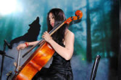

Expressing liking and disliking
 |
 |
 |
 |
Consider this:
Sample Conversations:
1. Do you like basketball?
Yes I do. / No, I don't.
2. What kind of food do you like?
I like Italian food.
(www.eslgold.com)
Something like this travesty of communication is just about where
the teaching of the ability to express liking and disliking starts
and stops in many coursebooks and on many websites.
In fact, the verb like is sometimes all that is taught before the attention shifts to whether an -ing form,
a noun phrase or an infinitive should follow like.
There's a lesson like that on this site, incidentally.
There is rather more to it than that.
 |
Verbs and aspects |
It is possible, with a little research and thought, to come up with
a range of verbs to express liking, disliking or indifference (and
already we have three functions to consider rather than two).
Such a list might include some unusual verbs and expressions and appear something like:
| Liking | Disliking | Indifference | ||
| admire adore appreciate be attracted to be crazy about be devoted to be fond of be inclined to be keen on be mad about care to |
delight in desire enjoy esteem fancy like love relish revel in venerate worship |
abhor abominate be anti be disgusted by be repulsed by can't abide can't bear can't endure can't put up with can't stand can't stomach |
can't tolerate despise detest disapprove dislike don't care for frown on hate loathe mind spurn |
abide be indifferent to bear endure not mind put up with stomach suffer tolerate |
I hold it dear
*I hold dear it
I hold good manners dear
I hold dear good manners.
It is, in any case, rare and formal and it is probably not worth troubling learners with it.)
We can give the list to our students and let them get on with it. In which case, we shouldn't be surprised if they produce:
|
|
and so on. So what's going wrong? Lots of things but the first we need to consider is aspect: habitual and continuous, in this case.
 |
Stative and Dynamic use |
The first question to ask is:
Do I always feel this way or am I feeling this way right now?
If it's the first of these, then the verb is being used in the
simple form with a habitual aspect in mind (as in, e.g., I
always play chess on Tuesdays).
In the second case, the verb is being used in the continuous form,
with an on-going aspect in mind. Reference is to
what I am feeling right this minute, not generally (as in, e.g.,
I am just arriving at the station).
What is important here is that we could just as well say:
Do I always feel this way or do I feel this way right now?
because the verb feel can be used in both the simple and the continuous form without a change in meaning.
Most verbs referring to likes and dislikes are used statively.
Note, it is the use that is stative, not the verb
itself. We don't see, therefore, e.g.:
*I am liking this
*She is disapproving of laziness
etc.
but some of the verbs, notably enjoy, can be used in both ways:
He enjoys classical music
I am enjoying the concert
It is important to understand that, although the verbs usually
appear in the simple present tense form, it can refer either
to a habitual aspect or to a progressive current feeling:
I like this soup (referring to a present feeling: I am
enjoying the soup right now)
I like pea soup (referring to the
habitual aspect of the
verb: I always enjoy pea soup)
Some of these verbs are only used in one aspect or the other but most can be used in both so our list needs adjusting to make this clear.
- Of the verbs expressing positive liking:
- be inclined to and care to cannot be
used to describe permanent states of mind or habits so we can't
usually have
*I am inclined to Italian food
*I always care to walk
But in the negative care to operates slightly differently. See below. - be fond of, be devoted to, delight in, esteem, relish, revel in, venerate and worship cannot
normally be used to refer to a current view only so we do
not find
*I am devoted to this morning's radio programme
*I worship Odin this morning
*I am fond of this glass of orange juice
etc. - All the other verbs in this category can be used in both aspects with no change in tense form.
- be inclined to and care to cannot be
used to describe permanent states of mind or habits so we can't
usually have
- All the verbs expressing disliking and
indifference can be used in both ways.
Which aspect is being expressed is often only discernible from
the context and co-text, especially the use of determiners.
So, we can
have, e.g.:
I can't abide this weather (now)
I can't abide cold weather (ever)
I don't care to walk far (ever)
I don't care to walk in this rain (now)
I hate poor ideas (always)
I hate that idea (now)
I can't endure any more of this music (now)
I can't endure classical music (ever)
I can't stomach his walking out like that (now)
I can't stomach rudeness at any time (ever)
etc. - The verb fancy is slightly odd in that it changes its
meaning between the aspects:
- I fancy going for a walk (want / would like to go now)
- I fancy her sister (am sexually attracted to always)
One of the first things to get straight, then, when presenting or practising this area with learners is this fundamental concept of the simple tense form being usable in both aspects.
(There is a guide to aspect on this site and another to stative and dynamic verb use, both linked from the list of related guides at the end.)
 |
Would you like a break now? |
One of the most important (and sometimes overlooked) functions of the modal auxiliary verb would is to override the habitual aspect with almost all these verbs so we can convert, for example:
| Habitual | Now | |
| He enjoys a game of tennis | → | He would enjoy a game of tennis |
| I can't stand rich food | → | I wouldn't be able to stand rich food |
| I like going to the restaurant | → | I would like to go to the restaurant |
| I hate going to the cinema | → | I would hate to go to the cinema |
All the expressions in the table above that involve the use of
can't are used in this way with be able to:
I wouldn't be able to endure another evening with him
I wouldn't be able to tolerate any more of this
etc.
Issues with would |
 |
Issue 1: would like vs. want |
The combination of would and like is often
taught as if I would like were simply a more polite way of saying
I want.
We get, therefore:
I want a new jacket + politeness marker = I would like a new
jacket
In some situations, this is true and
I would like to speak to the manager = I want to speak
to the manager + politeness marker.
In other settings, the situation is less clear because of the modal nature
of would. The expression would
like often implies a wish for something that one doesn't
expect to be fulfilled. Compare, for example:
I want a lot of money (so I am going to
devote my life to making it)
with
I would like a lot of money (but imagine
that I'll never have it).
 |
Issue 2: Meaning and collocation |
We cannot always override the habitual aspect with would,
for semantic and collocational reasons.
For example:
We can say:
Does she like a nap
after lunch?
and
Would she like a
nap after lunch?
and
Would she like a
break?
but not
*Does she like a
break?
because the concept of a break generally refers to the here
and now.
Equally, of course, many verbs that only refer
to habitual views (e.g., devoted to, esteem,
venerate and worship) cannot be preceded with would at all
so we can't say:
*I would be fond of a nap after lunch
*I would be crazy about Hollywood musicals
*I wouldn't abide bad grammar
etc.
because all these verbs and verbal expressions are used to refer to
habitual states of liking / disliking.
Issue 3: Colligation |
Colligation refers to the grammatical structures with which a word combines. In this case, the consequences of adding the modal auxiliary verb would to the sentence often results in the need to employ the to-infinitive, rather than the -ing form of the verb:
I adore watching movies →
I would adore to watch a movie
I like going swimming → I would like to go
swimming
Unfortunately, this isn't a reliable feature of the language because:
- If the verb is followed by a noun phrase then some
alterations are needed:
I love Italian food → *I would love Italian food
which needs to be expressed as
I would love to have / eat some Italian food - Some verbal expressions retain the -ing form even
when used with would:
I would adore going out tonight
I would appreciate seeing more of the town
I would delight in going to the see the film
I would relish having more of this
I would enjoy taking a short holiday
- Some verbs and expressions do not colligate with would
at all or only very rarely. This is because, as we saw
above, they generally refer to habitual responses rather than to
how someone feels now. Habitual responses are not
expressed with would. They include
be devoted to, be fond of, be mad about, desire, esteem, venerate, worship
So we do not find:
*I would be fond of a walk in the park
*I would be mad about chocolate cake
mind, spurn
So we do not find:
*He would spurn to be offered the job
*She would mind my opening the window
abide, endure, suffer
So we do not find:
*I would abide some more beer
*They would endure the loud music -
bear,
put up with and
stomach do not colligate with would but are
primed for could so:
we don't have
*They wouldn't bear it
but
They couldn't bear it
etc.
 |
Negation |
Negating many verbs in English actually produces an opposite
meaning. For example, the opposite of
I spoke
and
I am smoking
can be realised with
I didn't speak
and
I'm not smoking
respectively.
This is not so with many verbs expressing liking, disliking and
indifference.
- Verbs expressing liking:
-
Generally speaking, the stronger a verb is, the less likely that
negation produces its opposite meaning. For example:
Positive Negated Negated meaning He enjoys tennis He doesn't enjoy tennis He dislikes tennis I'm devoted to gardening I'm not devoted to gardening But I like it well enough I like going to the restaurant I don't like going to the restaurant I dislike going to the restaurant I hate going to the cinema I don't hate going to the cinema But I can tolerate it I'm mad about the idea I'm not mad about the idea But it's OK I'm keen on the idea I'm not keen on the idea I dislike the idea - Verbs expressing disliking:
- The negation of verbs expressing dislike usually results in
an expression of mild indifference:
Positive Negated Negated meaning He abhors tennis He doesn't abhor tennis But may mildly dislike tennis I loathe gardening I don't loathe gardening So I can tolerate gardening I dislike going to the restaurant I don't dislike going to the restaurant So I am prepared to go I hate going to the cinema I don't hate going to the cinema So I can tolerate it I abominate the idea I don't abominate the idea But may mildly dislike the idea I detest the idea I don't detest the idea But may mildly dislike the idea - Expressions with can't
- Removing the negation also results in the meaning of being
prepared to tolerate something you don't like.
Negative Positive Positive meaning He can't bear tennis He can bear tennis So he can tolerate your watching it (but he doesn't like it) I can't put up with him I can put up with him I can tolerate him (but I don't like him) She can't endure this music She can endure this music She is prepared to tolerate the music (but doesn't like it) I can't stomach this government I can stomach this government I can tolerate the government because I must (but don't like it) They can't stand the noise They can stand the noise The noise is bearable for them (although they don't like it) I can't tolerate the behaviour I can tolerate the behaviour The behaviour is tolerable (but I don't like it)
 |
Expressing indifference |
The verbs in the third column of the first list are often explained as referring to indifference rather than liking or disliking but the use is slightly more subtle than that. There is, in fact, a difference between those which express true neutrality or indifference and those which express a slight dislike.
True indifference
Only be indifferent and not mind express true
neutrality as in, e.g.:
I am indifferent to this kind of music
I don't mind the food here
and even in these cases, the verb is often accompanied by an adverb
to make the point:
I truly am
indifferent to kind of music
I really don't mind the food
here
The only really common way of expressing true indifference is
through the use of not + mind and that's why it is so often
taught.
The expression is normally confined to questions (asking about
toleration) or negatives (expressing indifference):
Do you mind if I open the window? (i.e.,
Is the action tolerable?)
Would you like to come? I don't mind
(i.e., I am indifferent one way or the other)
Many will not allow the use of the verb in the positive but some
will accept, e.g.:
?I mind his being late so often.
This meaning of the verb has to be carefully distinguished from
the related meaning of take care as in, e.g.:
Mind the step!
Conditional indifference
The other verbs in that list, abide, bear, endure, put up
with, stomach, suffer, tolerate, are frequently used with the
modal auxiliary can. We get therefore, for example:
I can abide his bad manners
I can bear the food here
I can tolerate cold weather
etc.
and all these express the fact that I may mildly dislike whatever it
is I am talking about but have no very strong feelings. In
other words, I will tolerate it only if I have
to.
Used without a modal auxiliary, the verbs suggest quite a strong
disliking for something but carry the sense of slight martyrdom, for
example:
I tolerate his late hours (although I dislike them,
I am too polite or shy to complain)
Negating these verbs
Used in the negative, most of these expressions imply quite
strong disliking but the verb mind and the
expression be indifferent to are rarely used this way, for
example:
I can't endure his company
I won't stomach that behaviour
I can't bear watching tennis
I can't suffer fools
?I mind your being late
The last example has the '?' before it because there are some
who will not accept this use at all and only use the verb in the
negative or interrogative forms (see above).
The form in, e.g.,
I am not indifferent to the weather
implies that you are responsive in some way but whether positively
or negatively remains unsaid.
 |
-ing or to-infinitive? |
Many of these verbs refer to one's past experience of things or to the future. Generally speaking, when they refer to past experience of something, they take the verb with -ing and when they refer forward in time, they take the to-infinitive so we get, e.g.:
I hate skiing (I have tried it and didn't like it)
I hate to interrupt (but I'm going to)
I dislike being cold (I know from experience)
I dislike to contradict you (but I'm going to)
 |
Adjectives |
An alternative way to express liking and disliking is to use a
copular verb (most commonly be) or an expression with I find
it/them/her/him etc. + the adjective derived from the verb. For example:
He's unendurable
She finds him attractive
I think playing chess is enjoyable
etc.
Unfortunately, here, too, we find irregularities:
- Only the simple verbs can have derived adjectives so we cannot make an adjective from, e.g., care for, be crazy about etc.
- Some of the simple verbs cannot have derived adjectives.
They are: appreciate, esteem, disapprove, mind, spurn, stand, abide, stomach - Even the adjectives which can be derived from the verbs perform
somewhat irregularly so we get:
-able endings others admirable
adorable
desirable
enjoyable
likeable
venerableabominable
unbearable
unendurable
intolerable
despicable
detestablebearable
endurable
sufferable
tolerablehateful
delightful
disgusting
attractive
abhorrent
loathsomeNotes: - the way to bet is on an -able ending
- we use a participle adjective for disgusting
- despise changes to despicable with
a vowel change:
/dɪ.ˈspaɪz/ → /dɪ.ˈspɪk.əb.l̩/ - abhor changes to abhorrent with a
vowel change:
/əb.ˈhɔː/ → /əb.ˈhɒ.rənt/ - there is a stress shift and vowel change on admirable
/əd.ˈmaɪə/ → /ˈæd.mə.rəb.l̩/ - fanciable exists but is informal and only
applies
to the
notion of sexual attraction - there are some spelling issues to do with dropping the 'e'
 |
Intensifiers |
| I absolutely loathe arguments |
With verbs and verbal expressions:
Almost all these verbs can be made more assertive and emphatic with the use of intensifiers, nearly always amplifiers. There are not very many adverbs which can function to amplify the effect of these verbs so they are easy to teach and learn. The four most common are really, strongly, greatly and absolutely (and for most teaching purposes, that's enough). Here's a short list:
- really: used for all the expressions encountered above
- absolutely and
completely: only generally used for the stronger
expressions
We can have:
absolutely adore, absolutely hate, completely despise etc.
but not
*absolutely like, *completely care for, *be absolutely fond of etc. (in the last case because fond is a gradable adjective so very fond of is quite possible) - with some expressions, completely
can act as a downtoner
I don't completely loathe it etc. which means something like I generally dislike it - strongly and
greatly
can be used with some of the weaker verbs.
strongly dislike
strongly disapprove
greatly attracted to
greatly enjoy
greatly love
greatly dislike
strongly fancy - strongly and
greatly
are less common with the stronger expressions:
*strongly abominate
*be greatly mad about
but
greatly adore
greatly admire
greatly esteem
are all possible, if slightly rare and formal. - Verbs also exhibit gradability and
the (im)possibility of modification with
very much and
a lot. For example:
I like it very much
I like it a lot
I care for him very much
She cares a lot for him
I am very much attracted to the idea
They would like it a lot
She enjoys Italian food very much
are all possible, but:
*I loathe it very much
*I loathe it a lot
*She abhors pop music very much
*Mary detests it a lot
*He adores her very much
*John adores her a lot
*They are very much mad about it
are not allowed because of the ungradable nature of the verbs.
(An oddity in this respect is the verb hate. The verb can be used with a lot but is much rarer / not allowed with very much:
She hates it a lot
?She hates it very much) - There are some rarer adverb-verb
collocations which are heard:
deeply disapprove / appreciate
fully despise
positively adore
heartily detest - Some of the language's taboo words
can also be used, alone or in combination with other adverbials:
can't bloody bear
can't fucking tolerate
absolutely bloody adore
etc. - Adverbs can also act as downtoners
with many verbs but their use is debatable. Some will not
accept any of the following, some will accept some of them.
Those marked * seem unacceptable but those marked ? are only
questionable:
?I somewhat enjoy Mozart
I quite enjoy Beethoven
*I pretty like it
I slightly dislike her
*She slightly adores it
*They nearly fancy going
She's slightly mad about computer games
*I faintly love Italian food
?He nearly detests flying
With adjectives:
A much greater range of adverbials can be used to amplify, emphasise or tone down the meaning of the adjectives. There is a guide to adverb modifiers on this site, linked below, to which you should refer for more detail. Most of what is said there also applies to modifying these adjectives. Here, a few examples will suffice.
- Adverbs acting as amplifiers
- It's completely
unendurable
I find his rudeness totally intolerable
The cat is absolutely adorable
His restraint is really admirable
That's thoroughly disgusting
She's very likeable
It's wholly desirable - Adverbs acting as downtoners
- It's somewhat enjoyable
It's pretty hateful
The food is slightly disgusting
That's almost bearable
I find it nearly loathsome
They are quite likeable children
I find it faintly loathsome
Disjuncts:
There is a guide to
adverbials on this site, linked below which includes consideration of
disjuncts. Here, the two most important are style and attitude
markers. For example:
Style disjuncts concern how the speaker / writer
wants the statement to be understood and are often used with the
plain verbs:
To be honest,
I loathe spinach
Frankly, I can't bear people
like him
If you ask me, it looks
pretty disgusting
In both these cases, the disjunct tones down the directness of the
expression of dislike.
Attitude disjuncts refer to and emphasise a
personal attitude, opinion or stance concerning the statement and
are often used with the adjectives to express how the listener /
reader should understand what is said:
Obviously,
this is disgusting
It stands to reason that
this is desirable
Combinations of disjuncts and adverbs can add a good deal
of subtlety:
To be quite candid
with you, I find it utterly
abominable
Three things to notice:

- The usual rules apply concerning gradability so we do not
find:
*very loathsome
*slightly abominable
*very unendurable
etc. - The distinction between style and attitude disjuncts is important for language analysis purposes but not something with which it is always wise to trouble learners.
- Intonation and sentence stress play a very important role: stressing the adverbial emphasises its effect.
 |
Style |
Style is not an either-or issue. There is a range from the very informal or casual to the very formal, often written only items and all sorts of gradations in between. Mostly, however, there is a correlation between frequency (how common a word is) and formality (the more common, the less formal).
At the formal end of the scale, we'll find verbs and verbal
expressions such as
venerate, delight in, esteem, relish, abhor, abominate, abide,
endure, spurn etc.
At the informal end of the scale we'll find, for example:
can't bear, like, love, be mad about, fancy, put up with,
stomach, dislike etc.
The rest will fall somewhere between the two poles and are best
described as neutral in style.
Learners need to know this.
 |
Implications for teaching |
Expressing likes and dislikes (as well as indifference) is an
important communicative skill so to confine learners to the use of like,
dislike, hate and love, while simple and reassuring, is
very limiting.
However, as we have seen, the area is by no means a simple one so we
have to tread carefully.
 |
The essential difference |
The issue of stative and dynamic verb use is, of course,
something you need to tackle before very much progress can be made.
The essential difference between reference to the here and now
and reference to how one always, or generally, feels is the first
concept to
get across.
It can be done quite simply:
 |
 |
| Do you
like swimming? Yes, I'm very fond of it. It's so relaxing. |
Would you
like to go swimming? No thanks, I hate swimming when the sea's so rough. It's frightening. |
Some simple concept-checking questions such as
- Does she like swimming?
Why? - Would she like to go swimming today?
Why not?
will soon get the message clear.
 |
Focus |
If you have worked your way through this guide, you will know
that the issues concerned with collocation and colligation are not
simple or easy to learn so it is important to focus on areas which
are structurally similar.
For example, trying to present and practise a mix of verbal expressions, some of
which colligate with would and some which don't is asking for
confusion.
|  |
Practice |
The verbs love, like and hate are similar in terms of the grammar
that accompanies them so that's an obvious place to start.
In addition, all the verbs can be followed by noun phrases (hence
skipping the awkward issues of colligation at lower levels) so a
simple exercise such as this can be useful:
 |
 |
She
doesn't like children She not __________ on children She doesn't __________ for children She l__________ children She really d__________ children |
 |
 |
She
loves the beach She a__________ the beach She is very __________ of the beach She's __________ about beach holidays She's really crazy __________ beach holidays |
 |
 |
How
does she feel about homework? Not strong: She doesn't __________ homework Stronger: She really __________ homework Very strong: She absolutely __________ homework |
| etc. You can make this less challenging by supplying the words to fill the gaps. | ||
More advanced learners will need to extend their repertoire, so a
logical next step is to focus on verbs which are less familiar but
stronger while still retaining some structural regularity.
Good candidates might be opposing pairs such as:
| Put these verbs in the
gaps: abide, stomach, relish, disapprove, detest, frown |
|
| She is crazy about watching tennis on TV ... | ... but he can't ______________ any sports at all |
| I ______________ eating in Indian restaurants ... | ... but my husband can't ______________ spicy dishes |
| I am very fond of shopping and often buy things we don't need ... | ... but my wife ______________ of spending money unnecessarily |
| I am crazy about going to the theatre ... | ... but my friend ______________ the crowds and ______________ on the cost of the tickets |
You can, naturally, insert some of the amplifying and downtoning adverbs into exercises like this to help your learners notice what's possible. See the list above for some ideas.
Alternative ways of expressing likes and dislikes with adjectives give your learners a wider language resource to call on. It can be done like this:
| Finish the sentence with an adjective which gives an opposite meaning. | |
| She is crazy about watching tennis on TV ... | ... but he thinks it's ______________ and goes to the pub |
| I dislike the new neighbours ... | ... but my husband finds them quite ______________ |
| I can't bear cats ... | ... but my wife thinks they are ______________ |
| I am keen on chess ... | ... but my friend finds it ______________ |
Again, amplifying and downtoning adverbials can be inserted into exercises like this.
Freer practice at higher levels might involve mixed feelings based on a series of images. For example:
| Follow the example and talk to your partner(s) about how you generally and sometimes feel about these things | ||
 |
 |
I am very fond of swimming but I can't bear it when there are jellyfish in the water |
 |
 |
I absolutely adore music but, to be perfectly honest, ... |
 |
 |
|
| Related guides | |
| aspect | for the guide to this area explaining how simple tense forms may express the continuous aspect |
| adjectives | for the guide to an obviously related area |
| adverbials | for the guide which considers adjuncts, disjuncts and conjuncts separately |
| adverbial intensifiers | for some consideration of how adjectives are amplified, emphasised or toned down |
| stative and dynamic verb use | for the guide to a key area |
| cause and effect | when we express liking or disliking, we often say why |
| disjuncts | for a fuller guide to this area |
Reference:
http://www.eslgold.com/speaking/ss_expressing_likes_dislikes.html
[accessed March 2017]